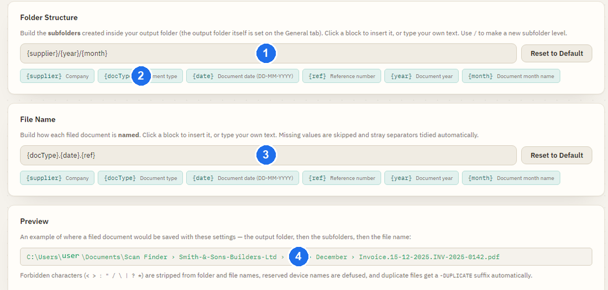

Search & Filing
Once you confirm a document, Scan Finder files a clean, neatly-named copy and makes it easy to find again. You never have to remember where you put anything.
How documents are filed
When you click Confirm & File, Scan Finder saves a tidy copy in your output folder, organised by company, year and month, with a clear, consistent file name.
Type.Date.Reference.Nothing is ever deleted. Once a document is safely filed, Scan Finder keeps its own copy and moves the original scan out of your source folder into a Processed folder — so you won't accidentally process the same document twice, and the original is still there if you need it. The tidy copy in your output folder is the one to keep.
Customise how documents are named and foldered
The layout above is the default, but you can change it in Settings → Output Structure using two simple builders. Click the blocks you want, and a live preview shows the result.

/ to start a new subfolder level ·
2 click a building block to insert it ·
3 the file-name pattern ·
4 a live preview of exactly where a document will be saved.The diagram below shows the same idea at a glance — the numbers match the points beneath it.
- Building blocks — Company, Year, Month, Type, Date and Reference. Click to add one.
- A " / " starts a new folder level — so
Company / Year / Monthmakes three nested folders. - Folder pattern — how the folders are nested.
- File name — how each filed document is named.
- Live preview — shows the finished path before you save, so there are no surprises.
Searching for a document
Open Search from the home screen to find anything you've filed.
- Type into any of the filters — company, reference, a date range, or document type. Results update as you type.
- Select a result to preview it on the right.
- From the preview you can open the file, show it in your file explorer, or open it back in Review if you need to change something.

Confirmed vs. still-in-progress
Search shows documents you've already confirmed and filed. If a document isn't showing up, it's most likely still waiting in the Review queue — confirm it there and it'll appear in Search.
Want to change the output folder or processing mode? See Settings & Help.